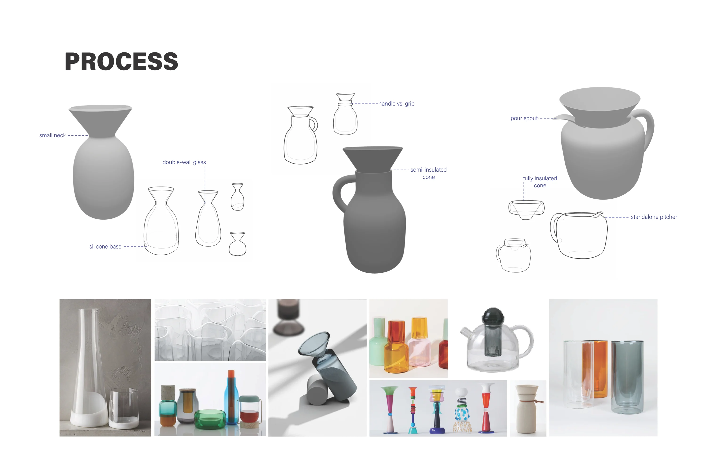
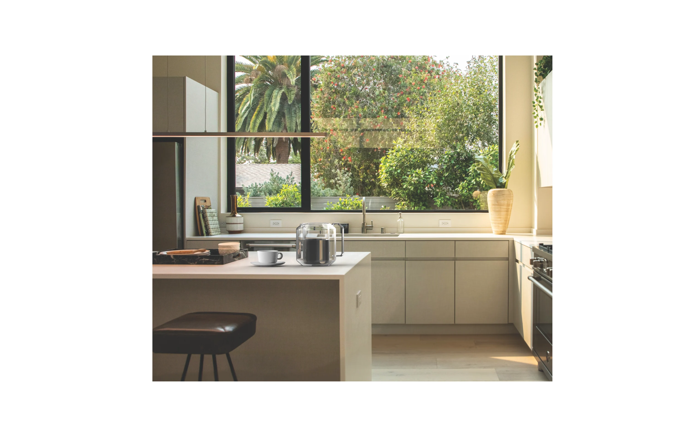

Pour Over Brewer design sprint The design of this pour over brewer is a nod to its role in the ritualistic practice ofmorning coffee. It is optimized for both its function as a brewer and as a piece thatcan live on a countertop the rest of the day. PROBLEMS TARGETS - Hard-to-find replacement filters- Filter material affecting flavorquality 1. Standard size, easily accessible filters2. Paper filters for flavor quality, and abilityto use alternatives 1. Add texture to direct water flow2. Insulate the cone to retain heat - Inconsistent water flow andextraction- Heat loss during brewing stage - Awkward or unstable grip- Delicate, fragile handle 1. Focus on pourability and comfort fordifferent hands2. Use materials that put users at ease 1. Protect surfaces (such as the base) fromimpact damage2. Insulate the body of the carafe - Fragile glass- Rapid heat loss  Both the Carafe and the Dripper are doublewalled glass to retain heat throughout thebrewing process. The silicone sleeve protects the dripperand keeps it in place. Both parts can be used together or individually.Rest the dripper directly on your mug and fillthe carafe with juice or tea. 
![Nine rendered studies of glass carafes and drippers beside photos of 3D-printed prototypes, with the text: A separate dripper and carafe was determined to be the most flexible format. The two pieces can act independently of each other, and one can be used even if the other breaks. Different shapes were experimented with to find something that would look good on a counter without getting in the way of the function. Functionality was refined through prototyping, including the added silicone sleeve and ridges to prevent suction and slow filtration.](../assets/img/pour-over/process-2.webp)